Designs that estimate the effect of an environmental exposure on crime: fixed effects, instruments and their diagnostics.
Each section is one help page: what the function is for, the example
of its help page as it runs, and the plot of its result where the
package draws one. ?name gives the arguments and the value
in full.
Poisson pseudo-maximum likelihood with absorbed fixed effects
ppmlfe(): Fits a count model with one or two sets of
fixed effects, such as place and day, absorbed rather than estimated as
columns, an optional exposure (offset) and robust standard errors of
several kinds. This is the estimator of Bondy, Roth and Sager (2020):
daily counts of offences by ward, ward fixed effects and time effects,
and ward population as the offset. It serves any count by place and
period against any exposure.
# simulated counts in 12 areas over 40 days
set.seed(1)
d <- expand.grid(day = 1:40, area = 1:12)
d$pop <- rep(round(runif(12, 1000, 5000)), each = 40)
d$pm <- rnorm(nrow(d), 20, 5)
d$temp <- rnorm(nrow(d), 15, 4)
d$crimes <- rpois(nrow(d), d$pop / 1000 *
exp(0.02 * d$pm + 0.01 * d$temp + rnorm(12, 0, 0.3)[d$area]))
f <- ppmlfe(d, "crimes", c("pm", "temp"), fe = c("area", "day"),
expo = "pop")
f
#> ppmlfe: Poisson pseudo-likelihood, 480 rows, fixed effects area and day; clustered errors (area; 12)
#> term est se stat p lo hi rr
#> pm 0.01498 0.004784 3.131 0.001743 0.005602 0.02436 1.015
#> temp 0.01570 0.004981 3.153 0.001617 0.005942 0.02547 1.016
plot(f)
# two-way clustering by area and day; Newey-West within areas
summary(ppmlfe(d, "crimes", c("pm", "temp"), fe = c("area", "day"),
expo = "pop", se = "twoway"))
#> term est se stat p lo hi rr
#> 1 pm 0.01497858 0.005057811 2.961475 0.003061691 0.005065455 0.02489171 1.015091
#> 2 temp 0.01570428 0.005172399 3.036170 0.002396039 0.005566569 0.02584200 1.015828
summary(ppmlfe(d, "crimes", c("pm", "temp"), fe = c("area", "day"),
expo = "pop", se = "nw", time = "day", lag = 3))
#> term est se stat p lo hi rr
#> 1 pm 0.01497858 0.004748329 3.154495 0.0016077588 0.005672029 0.02428514 1.015091
#> 2 temp 0.01570428 0.004500216 3.489673 0.0004836117 0.006884022 0.02452455 1.015828
plot(f)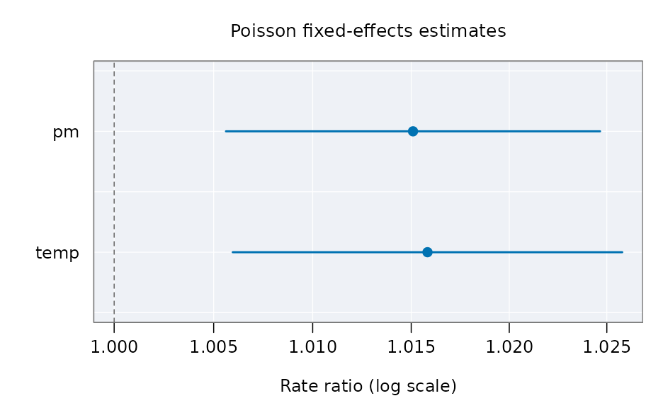
Two-stage least squares with absorbed fixed effects
ivfe(): Estimates the effect of an exposure that is
measured with error or shares unmeasured causes with the outcome, by
instrumental variables: each endogenous column is first regressed on the
excluded instruments and the controls (the first stage), and the outcome
on the fitted values and the controls (the second stage), with one or
two sets of fixed effects absorbed throughout. This is the linear
estimator of Herrnstadt, Heyes, Muehlegger and Saberian (2019): the log
of daily assaults near each monitor on ozone, instrumented by a westerly
wind, with monitor and time fixed effects and errors clustered by
monitor and by date. Without endo and inst it
is least squares with the fixed effects.
# simulated: an unmeasured daily shock u raises both the exposure and
# the outcome; the wind moves the exposure only
set.seed(2)
d <- expand.grid(day = 1:60, area = 1:12)
d$wind <- runif(nrow(d), 0, 360)
w <- windiv(d$wind, width = 90)
d <- cbind(d, w)
u <- rnorm(nrow(d))
d$oz <- 3 * w[, 1] - 2 * w[, 2] + u + rnorm(nrow(d))
d$out <- 0.5 * d$oz + u + rnorm(nrow(d))
f <- ivfe(d, "out", endo = "oz", inst = colnames(w), fe = c("area", "day"),
se = "twoway")
f
#> ivfe: two-stage least squares, 720 rows, fixed effects area and day; two-way clustered errors (area, day; 12 and 60)
#> term est se stat p lo hi
#> oz 0.516 0.03059 16.87 3.29e-09 0.4487 0.5833
#> first stage: robust Wald F, Kleibergen-Paap rk Wald F, effective F, its keff and 5% critical value (tau 10%):
#> endo wald kp eff keff cv ninst
#> oz 489.3 489.3 442.5 1.818 19.73 3
#> over-identification: Sargan, and Hansen J clustered as the first stage:
#> test stat df p
#> sargan 5.220 2 0.07353
#> hansen 3.573 2 0.16752
f$first
#> endo wald kp eff keff cv ninst
#> 1 oz 489.2895 489.2895 442.5469 1.818342 19.73326 3
f$fstab
#> endo inst est se rel
#> 1 oz w90_180 2.9213054 0.1237527 10.2179429
#> 2 oz w180_270 -1.9465070 0.1076014 -6.8083594
#> 3 oz w270_0 -0.0517003 0.1525103 -0.1808338
plot(f)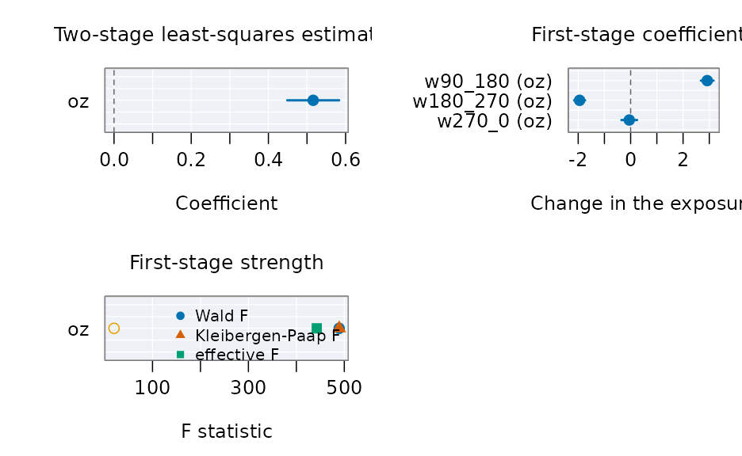
# shaped as Chen and Li (2020, equations 4-5, p. 4): county-season-year
# cells, the triple difference (treated state x summer x after) as the
# instrument of the AQI, county-by-year and state-by-season effects
# absorbed, the county-by-season effects as indicator columns, errors
# clustered by state (simulated)
set.seed(14)
g <- expand.grid(county = 1:30, season = c("s", "w"), year = 2000:2007)
g$state <- (g$county - 1) %/% 3 + 1
g$ddd <- as.numeric(g$state <= 5 & g$season == "s" & g$year >= 2003)
g$aqi <- 50 - 6 * g$ddd + rnorm(nrow(g), 0, 3)
g$lcrime <- 2 + 0.01 * g$aqi + rnorm(nrow(g), 0, 0.1)
g$cy <- paste(g$county, g$year)
g$ss <- paste(g$state, g$season)
# county x summer, less the first county of each state (the rest is
# absorbed by the two sets of effects)
for (k in unique(g$county[g$county %% 3 != 1])) {
g[[paste0("cs", k)]] <- as.numeric(g$county == k & g$season == "s")
}
ivfe(g, "lcrime", endo = "aqi", inst = "ddd",
x = grep("^cs", names(g), value = TRUE), fe = c("cy", "ss"),
clus = "state")$coef[1, ]
#> term est se stat p lo hi
#> 1 aqi 0.01381938 0.0009282825 14.88704 1.204632e-07 0.01171945 0.0159193
# shaped as Carrillo, Lopez-Luzuriaga and Malik (2018): the difference
# in differences of equation (4), p. 7 (city-day-hour counts, the
# treated city after the start, year-month and hour-by-weekday
# effects, errors clustered by week) and the spatial regression
# discontinuity of equation (6), p. 8 (counts by distance bin, the
# inside indicator, a line on each side, within a window)
set.seed(15)
h <- expand.grid(city = c("quito", "other"), day = 1:120, hour = 0:23)
h$after <- as.numeric(h$day > 60)
h$treat <- h$after * (h$city == "quito")
h$ym <- (h$day - 1) %/% 30
h$hd <- paste(h$hour, h$day %% 7)
h$week <- (h$day - 1) %/% 7
h$crimes <- rpois(nrow(h), 2 + 0.3 * h$treat)
h$q <- as.numeric(h$city == "quito")
ivfe(h, "crimes", x = c("treat", "q"), fe = c("ym", "hd"),
clus = "week")$coef[1, ]
#> term est se stat p lo hi
#> 1 treat 0.1875 0.08224276 2.279836 0.03579739 0.01398295 0.361017
b <- data.frame(dist = seq(-975, 975, by = 50))
b$inside <- as.numeric(b$dist > 0)
b$dside <- b$dist * b$inside
b$n <- rpois(nrow(b), 20 + 5 * b$inside)
b$one <- 1
ivfe(b[abs(b$dist) <= 800, ], "n", x = c("inside", "dist", "dside"),
fe = "one", se = "hc1")$coef[1, ]
#> term est se stat p lo hi
#> 1 inside 5.968382 3.073507 1.94188 0.05215164 -0.05558163 11.99235
plot(f)
Instrumental variables for a count outcome with fixed effects
ppmlcf(): Instruments an exposure in the count model of
ppmlfe(), in one of two ways (how). The first
stages regress each endogenous column on the excluded instruments and
the controls with the fixed effects (as in ivfe()).
Then:
# simulated counts; the shock u raises pollution and crime together
set.seed(3)
d <- expand.grid(day = 1:50, area = 1:15)
d$wind <- runif(nrow(d), 0, 360)
w <- windiv(d$wind, width = 90)
d <- cbind(d, w)
u <- rnorm(nrow(d), 0, 0.5)
d$pm <- 2 * w[, 1] - w[, 3] + u + rnorm(nrow(d))
d$crimes <- rpois(nrow(d), exp(1 + 0.1 * d$pm + 0.5 * u))
f <- ppmlcf(d, "crimes", endo = "pm", inst = colnames(w),
fe = c("area", "day"), nboot = 49, seed = 1)
f
#> ppmlcf: Poisson control function, 750 rows, fixed effects area and day; 49 bootstrap draws of 15 clusters (area)
#> term est se stat p lo hi rr
#> pm 0.08266 0.03095 2.671 0.0075737 0.02199 0.1433 1.086
#> vhat:pm 0.14047 0.03845 3.654 0.0002587 0.06512 0.2158 1.151
#> first stage: robust Wald F, Kleibergen-Paap rk Wald F, effective F, its keff and 5% critical value (tau 10%):
#> endo wald kp eff keff cv ninst
#> pm 255.2 255.2 342.5 2.151 18.98 3
plot(f)
# the paper's plug-in, with its naive errors
summary(ppmlcf(d, "crimes", endo = "pm", inst = colnames(w),
fe = c("area", "day"), how = "plug", se = "naive"))
#> term est se stat p lo hi rr
#> 1 pm 0.07803114 0.02424708 3.218167 0.001290126 0.03050775 0.1255545 1.081156
plot(f)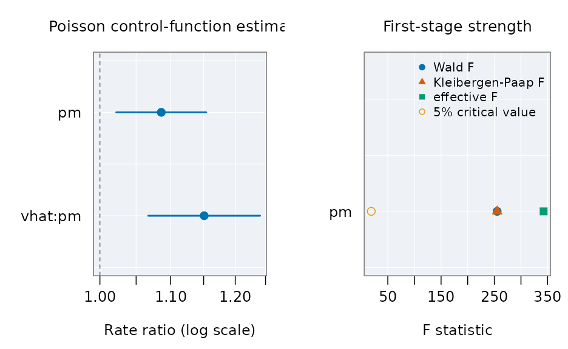
Exponential-mean GMM for a count with an endogenous exposure
expgmm(): Estimates E(y | x) = exp(x’b + log(expo)) with
some regressors endogenous, by the generalised method of moments on the
first-order moment conditions alone, as Mullahy (1997) and Windmeijer
and Santos Silva (1997) set it out: sum_i z_i u_i(b) = 0 with
z the excluded instruments and the exogenous regressors.
The residual (err):
# simulated: an unmeasured shock v multiplies the mean and moves the
# exposure; two instruments, day effects, errors clustered by area
set.seed(4)
d <- expand.grid(day = 1:10, area = 1:40)
d$z1 <- rnorm(nrow(d))
d$z2 <- rnorm(nrow(d))
v <- rnorm(nrow(d), 0, 0.5)
d$pm <- 0.6 * d$z1 - 0.4 * d$z2 + v + rnorm(nrow(d), 0, 0.5)
d$crimes <- rpois(nrow(d), exp(0.5 + 0.2 * d$pm + v))
f <- expgmm(d, "crimes", endo = "pm", inst = c("z1", "z2"), fe = "day",
clus = "area")
f
#> expgmm: exponential-mean GMM, multiplicative residual, two-step, 400 rows; errors clustered by area (40)
#> term est se stat p lo hi rr
#> pm 0.1559 0.06466 2.412 0.01588 0.02921 0.2827 1.169
#> Hansen J = 3.22 on 1 df, p = 0.07274
f$j
#> stat df p
#> 1 3.220049 1 0.07274147
plot(f)
# the additive residual, one step
summary(expgmm(d, "crimes", endo = "pm", inst = c("z1", "z2"),
fe = "day", clus = "area", err = "add", step = "one"))
#> term est se stat p lo hi rr
#> 1 pm 0.1582281 0.06382036 2.479273 0.01316505 0.03314248 0.2833137 1.171433
plot(f)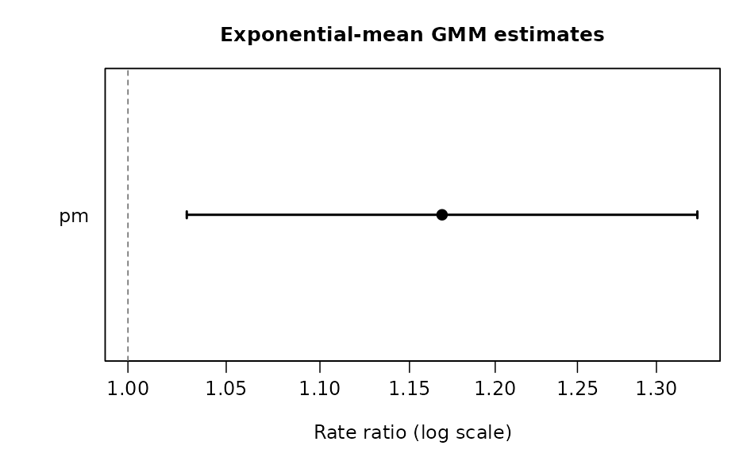
The parts of a fitted regression
racc(): The fits of ppmlfe(),
ivfe(), ppmlcf(), expgmm(),
fepnl(), gmmpnl(), didfe(),
rdloc() and sarml() are lists, and the usual
accessors read them: coef() gives the estimates by term,
confint() their intervals, vcov() the
covariance matrix of the estimates and nobs() the rows the
fit used.
set.seed(1)
d <- data.frame(u = rep(1:20, each = 6), x = rnorm(120))
d$y <- 1 + 0.5 * d$x + rnorm(120)
f <- ivfe(d, "y", x = "x", fe = "u")
coef(f)
#> x
#> 0.4803809
confint(f)
#> lower upper
#> x 0.1880123 0.7727495
#> attr(,"level")
#> [1] 0.95
vcov(f)
#> x
#> x 0.01951251
nobs(f)
#> [1] 120
plot(f)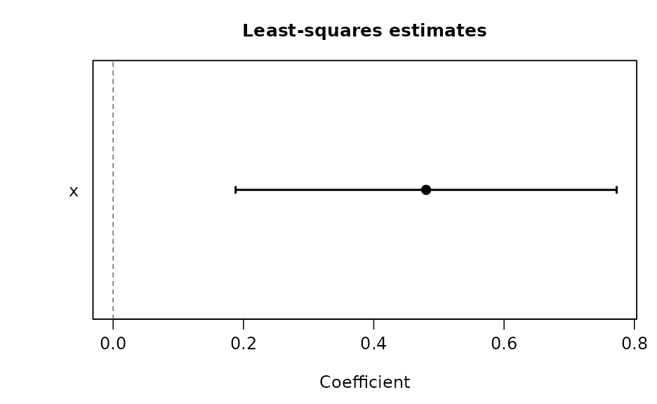
Wind-direction instruments
windiv(): Turns wind directions into indicators of the
sector the wind blows from, one sector left out, optionally one set per
area so that the same wind may act differently in different parts of a
city; from hourly directions it first makes one per day.
windiv(c(10, 100, 200, 300))
#> w90_180 w180_270 w270_0
#> [1,] 0 0 0
#> [2,] 1 0 0
#> [3,] 0 1 0
#> [4,] 0 0 1
# the paper's whole-degree quadrants: 90 is in the first
windiv(c(90, 91), edges = "paper")
#> w90_180 w180_270 w270_0
#> [1,] 0 0 0
#> [2,] 1 0 0
# quadrants by region, as in London
windiv(c(10, 100, 200, 300), area = c("east", "east", "west", "west"))
#> w90_180:east w180_270:east w270_0:east w90_180:west w180_270:west w270_0:west
#> [1,] 0 0 0 0 0 0
#> [2,] 1 0 0 0 0 0
#> [3,] 0 0 0 0 1 0
#> [4,] 0 0 0 0 0 1
# one westerly sector
windiv(c(230, 300), sect = c(225, 285))
#> w225_285
#> [1,] 1
#> [2,] 0
# hours to days: 350 and 10 degrees average to north
windiv(c(350, 10, 100, 120), by = c(1, 1, 2, 2))
#> w90_180 w180_270 w270_0
#> 1 0 0 0
#> 2 1 0 0
#> attr(,"dir")
#> [1] 360 110
windiv(c(350, 10, 100, 120), by = c(1, 1, 2, 2), share = TRUE)
#> w90_180 w180_270 w270_0
#> 1 0 0 0.5
#> 2 1 0 0.0
#> attr(,"dir")
#> [1] 360 110Temperature inversions
invsn(): The instrument of Bondy, Roth and Sager (2020,
p. 566-567): “the continuous difference between temperatures at the
ground level and temperatures at circa 750 m altitude (925 hectopascals
(hPa) pressure level)”. On most days the air cools with height; in an
inversion it is warmer above than at the ground, and pollutants are
trapped near the ground.
invsn(c(10, 5, 2), c(8, 6, 2))
#> diff inv
#> 1 -2 0
#> 2 1 1
#> 3 0 0
# three-hourly readings, one row per day: inverted when every reading is
invsn(c(1, 2, 3, 1, 2, 3), c(4, 5, 6, 4, 1, 6), by = c(1, 1, 1, 2, 2, 2))
#> by n diff inv
#> 1 1 3 3.000000 1
#> 2 2 3 1.666667 0
invsn(c(10, 5, 2), c(8, 6, 2), sign = "ground", brk = c(-Inf, -1, 0, Inf))
#> diff inv bin
#> 1 2 0 (0,Inf]
#> 2 -1 1 (-Inf,-1]
#> 3 0 0 (-1,0]
# the share of days without an inversion and the support (check 3)
attr(invsn(c(10, 5, 2), c(8, 6, 2)), "diag")
#> n zero min max
#> 1 3 0.6666667 -2 1Downwind exposure: places downwind of sources of pollution
dwnexp(): Whether each place lies downwind of sources of
pollution in each period, and how far off the wind’s line it lies: the
instruments of the papers that let the wind carry smoke from fires that
move from day to day (Bao and Da 2026) or from a fixed set of sources
(Ayesh 2023), for the instrumental-variable estimators
ivfe(), ppmlcf() and
expgmm().
# two plumes on day 1, one on day 2; four county points (planar, km)
s <- data.frame(x = c(0, 50, 0), y = c(0, 0, 0), day = c(1, 1, 2),
from = c(180, 270, 0))
p <- data.frame(x = c(0, 100, 0, -80), y = c(100, 10, -60, 0))
r <- dwnexp(s$x, s$y, s$day, s$from, p$x, p$y)
r
#> id per n any
#> 1 1 1 1 1
#> 2 2 1 1 1
#> 3 3 1 0 0
#> 4 4 1 0 0
#> 5 1 2 0 0
#> 6 2 2 0 0
#> 7 3 2 1 1
#> 8 4 2 0 0
# the county-month count of downwind days (Bao and Da 2026, eq 1)
r$month <- 1
aggregate(any ~ id + month, r, sum)
#> id month any
#> 1 1 1 1
#> 2 2 1 1
#> 3 3 1 1
#> 4 4 1 0
# Ayesh's instrument: the angle off the mean wind of the source
# districts, times the mean distance to them
dwnexp(c(0, 10), c(0, 0), c(2020, 2020), c(240, 250), c(30, -30, 5),
c(20, -20, 0), rule = "angle")
#> id per angle dist z
#> 1 1 2020 13.65981 32.16989 439.4346
#> 2 2 2020 175.25512 40.38844 7078.2802
#> 3 3 2020 65.00000 5.00000 325.0000
# the wedge against a square county
sq <- data.frame(id = 1, x = c(-10, 10, 10, -10), y = c(40, 40, 60, 60))
dwnexp(0, 0, NULL, 180, sq$x, sq$y, sq$id, rule = "wedge", rad = 100)
#> id per n any
#> 1 1 1 1 1The tailwind component of the wind along a flight course
tailwd(): The part of the wind that blows along a
course, positive for a tailwind, from which Hener (2022) builds the
instrument of the landing direction at Frankfurt Airport: aircraft land
westbound (course 250 degrees) unless the tailwind on that course
exceeds 2.6 m/s, so the days of the eastbound approach, and which
municipalities lie under the noise, follow from the wind.
# wind from the east (70 degrees) at 4 m/s is a 4 m/s tailwind westbound
tailwd(c(70, 340, 250), c(4, 4, 4))
#> [1] 4.000000e+00 -7.347881e-16 -4.000000e+00
# hourly readings to the daily maximum, then Hener's instrument for a
# municipality under the eastbound approach
tw <- tailwd(c(70, 90, 250, 260), c(3, 2, 5, 1), by = c(1, 1, 2, 2))
as.integer(tw$tw > 2.6)
#> [1] 1 0Irrelevant-day placebo
plcday(): Refits an estimator with the exposure taken
from other days of the same place, leads and lags in one call, and
returns one table of coefficients, the same day first. This is the
placebo of Bondy, Roth and Sager (2020, table A1 and footnote 27: 7, 31
and 365 days back and forward) and of Herrnstadt, Heyes, Muehlegger and
Saberian (2019, table 9: 100 days); shifts = c(-365, -100, -31, -7, 7,
31, 100, 365) runs both.
# simulated: crime responds to same-day pollution only
set.seed(4)
d <- expand.grid(day = 1:80, area = 1:12)
d$pm <- rnorm(nrow(d), 20, 5)
d$crimes <- rpois(nrow(d), exp(0.5 + 0.03 * d$pm))
p <- plcday(d, "pm", "area", "day", shifts = c(-7, 7), y = "crimes",
x = "pm", fe = c("area", "day"))
p
#> plcday: the coefficient of pm with values of other days (shift 0 is the same day; moved: both)
#> shift est se lo hi p n
#> 0 0.0270936 0.004098 0.019062 0.035125 3.806e-11 960
#> -7 0.0004221 0.003722 -0.006873 0.007717 9.097e-01 876
#> 7 -0.0088918 0.005132 -0.018950 0.001167 8.316e-02 876
plot(p)
plot(p)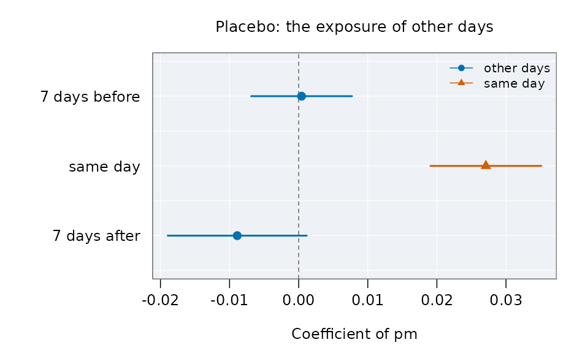
The upwind and downwind design around a road or a point source
updwn(): Compares counts on the downwind side of a
pollution source with counts on its upwind side on the same day, the
design of Herrnstadt, Heyes, Muehlegger and Saberian (2021) for the
interstates of Chicago (first as Herrnstadt and Muehlegger 2015). The
upwind side shares the day’s weather and everything else about the day
near that road, so it is the control for the downwind side; the side
fixed effects take out what differs between the two sides on every
day.
# simulated: a road along the x axis, areas on both sides, crime up 10%
# on the downwind side
set.seed(5)
a <- data.frame(area = 1:40, ax = runif(40, 0, 5000),
ay = runif(40, -4000, 4000))
d <- merge(a, data.frame(day = 1:120))
d$wind <- runif(120, 0, 360)[d$day]
blowsn <- cos((d$wind + 180) * pi / 180) # +1 when the wind blows north
dn <- abs(d$ay) < 1600 &
((d$ay > 0 & blowsn > 0.5) | (d$ay < 0 & blowsn < -0.5))
d$crimes <- rpois(nrow(d), 3 * (1 + 0.1 * dn))
road <- data.frame(x0 = 0, y0 = 0, x1 = 5000, y1 = 0)
u <- updwn(d, "crimes", "ax", "ay", "day", "wind", road, band = 1600,
offs = c(-1600, 0, 1600))
u
#> updwn: downwind against upwind, 154 side (area) days, outcome over its mean, tolerance 60 degrees
#> term est se stat p lo hi
#> down 0.01076 0.03251 0.3309 0.7407 -0.05296 0.07448
#> rows by classification:
#>
#> downwind upwind along nosource twosources onsource missing
#> 351 342 387 3720 0 0 0
#> placebo segments moved sideways:
#> off est se lo hi p n
#> -1600 -0.02086 0.02290 -0.06575 0.02403 0.362503 154
#> 0 0.01076 0.03251 -0.05296 0.07448 0.740707 154
#> 1600 -0.07013 0.02327 -0.11574 -0.02453 0.002577 154
plot(u)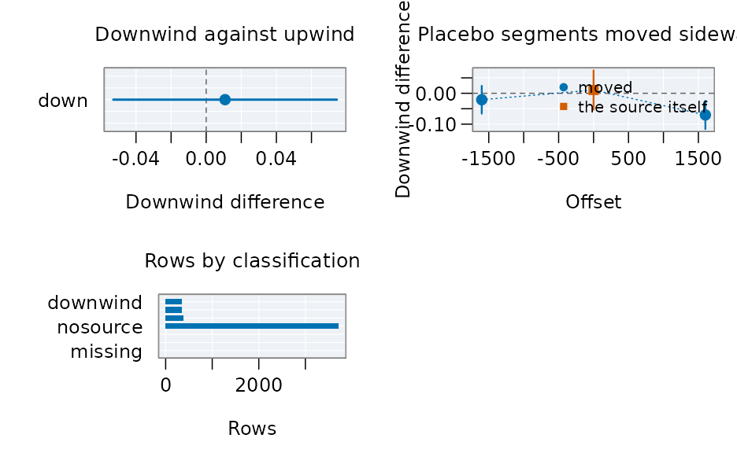
# the Poisson model and two distance rings
summary(updwn(d, "crimes", "ax", "ay", "day", "wind", road, band = 1600,
norm = "pois", dist = c(0, 500, 1600)))
#> term est se stat p lo
#> 1 down:[0,500] 0.11314531 0.06794356 1.6652838 0.09585616 -0.02002163
#> 2 down:(500,1.6e+03] -0.03814761 0.04628543 -0.8241818 0.40983628 -0.12886538
#> hi rr
#> 1 0.24631225 1.1197946
#> 2 0.05257017 0.9625708
plot(u)
Join an exposure table to counts by place and day
expjn(): Makes the analysis table of the estimators of
this family: the rows of the outcome table (place, day, count, …) with
the exposure of the same place and day joined on. Exposure may come from
monitors (assigned to areas beforehand, for example by inverse squared
distance from the three nearest, as Bondy, Roth and Sager do) or from
crimlab’s dispersion functions (gplume(),
plmfld()).
ex <- data.frame(
area = c("a", "a", "b"),
day = c(1, 2, 1),
pm = c(10, 12, 8)
)
oc <- data.frame(area = c("a", "a", "b", "b"), day = c(1, 2, 1, 2),
crimes = c(3, 1, 0, 2))
j <- expjn(ex, oc)
j
#> expjn: 3 rows joined; 1 outcome row(s) without an exposure left out; 0 exposure row(s) without an outcome
j$data
#> area day crimes pm
#> 1 a 1 3 10
#> 2 a 2 1 12
#> 3 b 1 0 8Smoke instruments from plume data
smkiv(): Builds the wildfire-smoke instruments of the
recent papers from a daily smoke-plume record by place: the presence of
a plume; the presence adjusted to the plumes that reached the ground;
plume density classes; smoke-attributable fine particles; and counts by
month.
# simulated plumes and PM2.5 in two places over 120 days
set.seed(6)
d <- data.frame(place = rep(c("a", "b"), each = 120),
day = rep(as.Date("2024-06-01") + 0:119, 2))
d$plume <- rbinom(240, 1, 0.2)
d$pm <- rnorm(240, 8, 2) + d$plume * rbinom(240, 1, 0.5) * 15
d$near <- ifelse(d$place == "a", "b", "a")
s <- smkiv(d, "plume", "place", "day", pm = "pm", adj = "own")
table(raw = d$plume, adjusted = s$smoke)
#> adjusted
#> raw 0 1
#> 0 186 0
#> 1 25 29
head(smkiv(d, "plume", "place", "day", pm = "pm", adj = "nbr", nbr = "near"))
#> smoke bg spm
#> 1 0 7.978119 0
#> 2 0 7.978119 0
#> 3 0 7.978119 0
#> 4 0 7.978119 0
#> 5 0 7.978119 0
#> 6 0 7.978119 0Runs of exposed days
exprun(), runfx(): Counts, for each place
and day, how many days in a row the place has been exposed (smoke
present, pollution above a threshold), and makes the indicators of the
first, second, … day of a run. runfx() fits a model with
them: the effect by day in the run, as Lee and Lee (2026, equation 3,
p. 12) estimate it, Crime = b1 Day1 + b2 Day2 + b3 Day3+ + …, which
shows whether the effect fades as people adapt (it rises on the first
and second smoke days and falls from the third in their 21 cities).
d <- data.frame(area = 1, day = 1:8, smoke = c(0, 1, 1, 1, 1, 0, 1, 0))
cbind(d, exprun(d, "smoke", "area", "day"))
#> area day smoke run run1 run2 run3p
#> 1 1 1 0 0 0 0 0
#> 2 1 2 1 1 1 0 0
#> 3 1 3 1 2 0 1 0
#> 4 1 4 1 3 0 0 1
#> 5 1 5 1 4 0 0 1
#> 6 1 6 0 0 0 0 0
#> 7 1 7 1 1 1 0 0
#> 8 1 8 0 0 0 0 0
# simulated: crime up on the first two smoke days
set.seed(7)
d <- expand.grid(day = 1:120, area = 1:12)
d$smoke <- rbinom(nrow(d), 1, 0.3)
r <- exprun(d, "smoke", "area", "day")
d$crimes <- rpois(nrow(d), exp(1 + 0.2 * r$run1 + 0.1 * r$run2))
f <- runfx(d, "crimes", "smoke", "area", "day", fe = c("area", "day"))
f
#> runfx: the effect by day of a run of exposed days
#> term est se stat p lo hi rr
#> run1 0.19460 0.03834 5.0753 3.870e-07 0.11945 0.26975 1.2148
#> run2 0.06225 0.05863 1.0617 2.884e-01 -0.05267 0.17717 1.0642
#> run3p -0.03799 0.05251 -0.7234 4.694e-01 -0.14091 0.06493 0.9627
plot(f)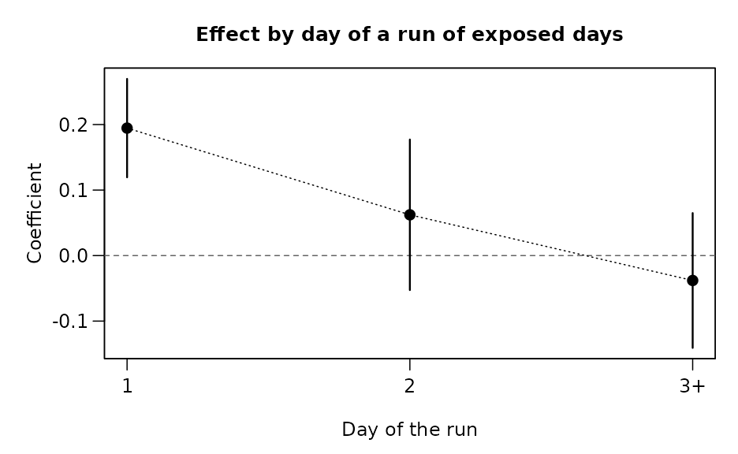
plot(f)
Effects by a moderator, with the joint test of equality
hetfx(): Estimates the effect of an exposure separately
for each level of a moderator (household wealth, income quantile, rural
or urban, offence context) and tests whether the effects are equal.
# simulated: pollution matters in poor areas only
set.seed(8)
d <- expand.grid(day = 1:60, area = 1:20)
d$poor <- ifelse(d$area <= 10, "poor", "not poor")
d$pm <- rnorm(nrow(d), 20, 5)
d$crimes <- rpois(nrow(d), exp(0.5 + 0.04 * d$pm * (d$poor == "poor")))
h <- hetfx(d, "pm", "poor", y = "crimes", x = "pm", fe = c("area", "day"))
h
#> hetfx: the effect by level (interactions)
#> level est se lo hi p n
#> not poor -0.002938 0.005806 -0.01432 0.008441 6.128e-01 600
#> poor 0.043931 0.004062 0.03597 0.051892 2.910e-27 600
#> Wald test of equal effects: 41.96 on 1 df, p = 9.31e-11
plot(h)
plot(h)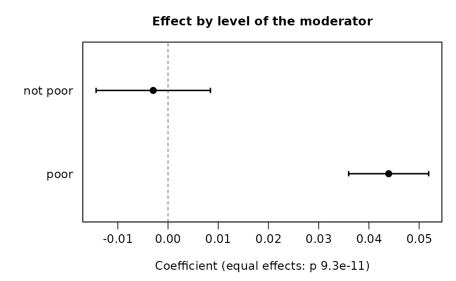
The time-stratified case-crossover design
ccross(): Compares each day’s count with the counts of
the same place on the other days of its stratum, the case-crossover
design for counts: a Poisson model with one fixed effect per stratum,
which gives the same coefficients as the conditional Poisson model. Ju
et al. (2026, equations 1 and 2, p. 7) use the space-time stratum “one
region nested in the same weekday of same month from the same year”
(strat = "ymw", the default), a control function for
wildfire PM2.5 driven by wind speed, the 2-day moving average of
exposure (ma), and errors clustered by calendar year-month
(the default clus here).
set.seed(9)
d <- expand.grid(day = as.Date("2023-01-01") + 0:364, area = 1:4)
d$pm <- rnorm(nrow(d), 15, 4)
d$crimes <- rpois(nrow(d), exp(1 + 0.02 * d$pm))
ccross(d, "crimes", "area", "day", ma = "pm", x = "pm")
#> ppmlfe: Poisson pseudo-likelihood, 1456 rows, fixed effects .strat; clustered errors (.ym; 12)
#> term est se stat p lo hi rr
#> pm 0.01792 0.005167 3.467 0.0005256 0.007789 0.02804 1.018
# shaped as Burkhardt et al. (2019, JEEM, equation 1, p. 5): county-day
# counts on PM2.5 and ozone together, county-by-year-by-month-by-weekday
# effects, errors clustered by county (simulated)
d$o3 <- rnorm(nrow(d), 0.03, 0.01)
ccross(d, "crimes", "area", "day", x = c("pm", "o3"), clus = "area")
#> Warning: ccross: fewer than ten clusters; cluster-robust errors are unreliable with so
#> few (wcbx() is made for this case).
#> ppmlfe: Poisson pseudo-likelihood, 1460 rows, fixed effects .strat; clustered errors (area; 4)
#> term est se stat p lo hi rr
#> pm 0.01407 0.002616 5.37971 7.461e-08 0.008946 0.0192 1.014
#> o3 0.11728 1.936045 0.06058 9.517e-01 -3.677299 3.9119 1.124
# shaped as Han et al. (2026, Methods p. 2 and table 1): city-day
# counts, same-weekday-same-month strata, a holiday indicator, natural
# splines of temperature (6 df) and humidity (3 df), NO2 at lag 0, the
# percent change per interquartile range (simulated)
d$no2 <- rnorm(nrow(d), 30, 10)
d$temp <- 15 + 10 * sin(2 * pi * as.numeric(d$day) / 365) +
rnorm(nrow(d))
d$rh <- runif(nrow(d), 30, 90)
d$hol <- as.numeric(format(d$day, "%m-%d") %in% c("01-01", "10-01"))
d$crimes <- rpois(nrow(d), exp(1 + 0.004 * d$no2))
h <- ccross(d, "crimes", "area", "day", x = c("no2", "hol"),
ns = c(temp = 6, rh = 3), clus = "area")
#> Warning: ccross: fewer than ten clusters; cluster-robust errors are unreliable with so
#> few (wcbx() is made for this case).
b <- h$coef[h$coef$term == "no2", ]
100 * (exp(c(b$est, b$lo, b$hi) * IQR(d$no2)) - 1)
#> [1] 1.4930239 -0.7746229 3.8124944
plot(h, terms = "no2")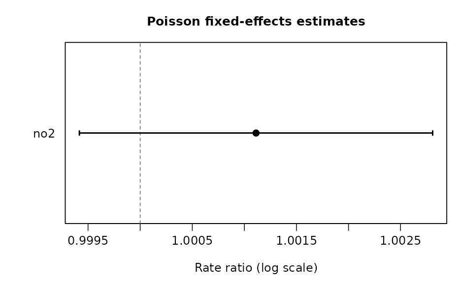
plot(h)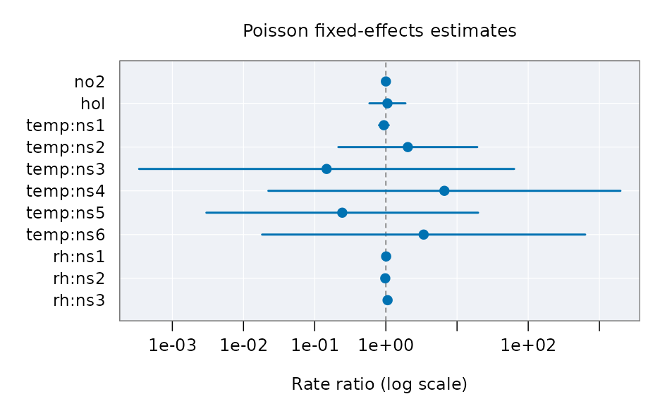
Two exposures together: their interaction and the surface of effects
jntx(): Estimates how two exposures (heat and ozone,
smoke and heat) act together on a count, as a surface of rate ratios
over both, the effect of one at chosen levels of the other, and a test
of the interaction.
set.seed(10)
d <- expand.grid(day = 1:150, city = 1:10)
d$temp <- rnorm(nrow(d), 25, 4)
d$o3 <- 0.6 * d$temp + rnorm(nrow(d), 30, 6)
d$crimes <- rpois(
nrow(d),
exp(1 + 0.02 * d$temp + 0.001 * d$temp * d$o3 / 10)
)
j <- jntx(d, "crimes", "temp", "o3", fe = "city")
#> Warning: jntx: the joint test of 12 restrictions is not computed: the covariance has
#> rank 9 (too few clusters for it).
j
#> jntx: the effect of x1 (spline surface) at levels of x2
#> x2 p2 est se lo hi rr
#> 34.36 0.05 0.4016 0.08776 0.22956 0.5736 1.494
#> 45.04 0.50 0.3180 0.02645 0.26611 0.3698 1.374
#> 55.19 0.95 0.1665 0.12481 -0.07812 0.4111 1.181
#> Wald test of no interaction: NA on 12 df, p = NA
plot(j)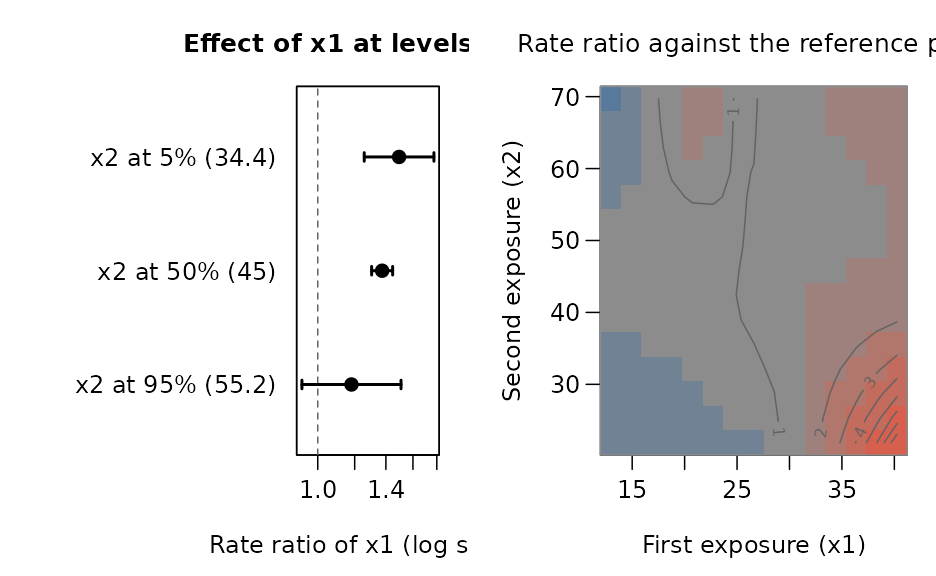
plot(j)
Exposure in bins: dose-response and tests of non-linearity
dosebin(): Replaces a continuous exposure by indicators
of its bins, the reference bin left out, fits the model, and tests
whether the bins matter and whether their effects follow a straight
line.
set.seed(11)
d <- expand.grid(day = 1:100, area = 1:10)
d$aqi <- rgamma(nrow(d), 4, 0.1)
d$crimes <- rpois(nrow(d), exp(1 + 0.3 * (d$aqi > 50)))
b <- dosebin(d, "crimes", "aqi", fe = c("area", "day"))
b
#> dosebin: the effect of each bin against the reference
#> bin mid n est se lo hi p
#> [4.35,22.8] 16.77 200 0.00000 NA NA NA NA
#> (22.8,32.5] 27.82 200 0.01200 0.05795 -0.10159 0.1256 8.360e-01
#> (32.5,42.2] 37.07 200 -0.08752 0.05118 -0.18783 0.0128 8.727e-02
#> (42.2,55.1] 47.41 200 0.04748 0.04284 -0.03649 0.1314 2.678e-01
#> (55.1,138] 67.78 200 0.21854 0.04937 0.12177 0.3153 9.580e-06
#> test stat df p
#> all 25.25 4 0.0000448
#> linear 14.72 3 0.0020678
plot(b)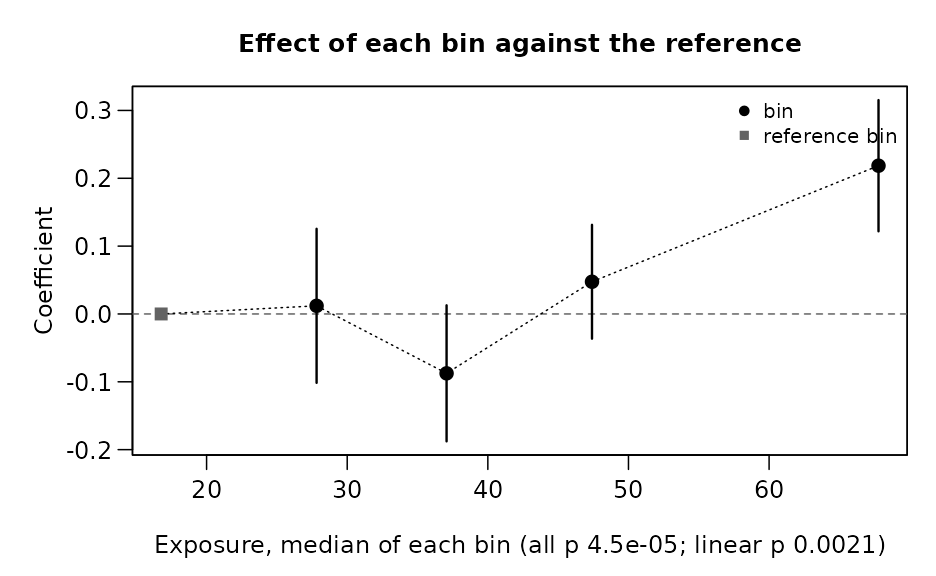
plot(b)
Effects by offence type in one call, with a multiple-testing correction
typefx(): Fits the same model to several outcomes
(assault, robbery, burglary, property crime, …) and adjusts the p-values
for the number of outcomes tested.
set.seed(12)
d <- expand.grid(day = 1:60, area = 1:12)
d$pm <- rnorm(nrow(d), 20, 5)
d$assault <- rpois(nrow(d), exp(0.5 + 0.03 * d$pm))
d$theft <- rpois(nrow(d), 2)
r <- typefx(d, c("assault", "theft"), "pm", x = "pm",
fe = c("area", "day"))
r
#> typefx: one fit per outcome, p-values adjusted by holm
#> y est se lo hi p padj n
#> assault 0.028269 0.007333 0.01390 0.042642 0.0001157 0.0002314 720
#> theft -0.002616 0.006038 -0.01445 0.009219 0.6648421 0.6648421 720
plot(r)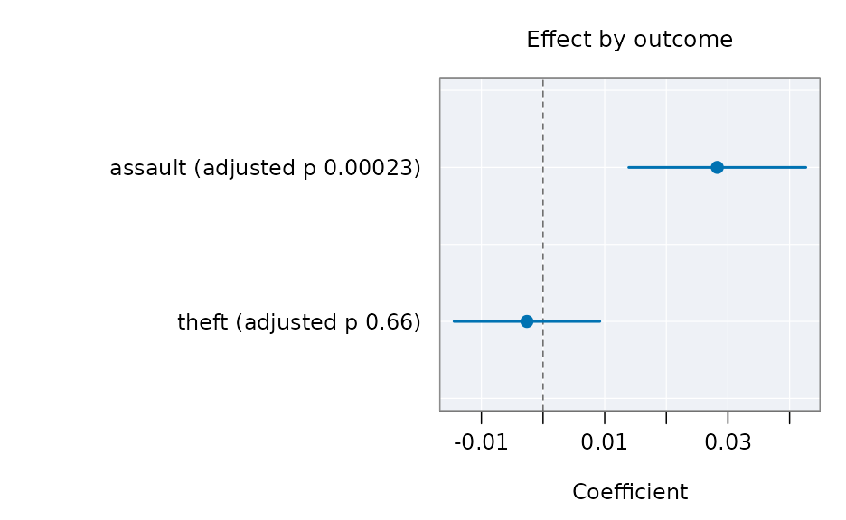
plot(r)
Inverse-distance-weighted interpolation, and zonal means
idwint(): Carries the values of monitors to target
points as the mean of the nearest monitors weighted by their distance to
the power -p, and averages the targets of each zone.
Exposure papers assign monitor readings to places this way: Rahman et
al. (2023, sec. 2.3) take “inverse distance squared weighting of
observations from up to four nearby (<50 km) monitoring locations”
for census tract centroids (p = 2, k = 4,
rad = 50, lonlat = TRUE); Wongchanapai et
al. (2025) interpolate a surface of annual PM2.5 “using the inverse
distance weight method” and take “zonal statistics” per municipality
(targets on a grid over the state, zone the municipality of
each grid point; they used ArcGIS Pro and state neither the power nor
the neighbours, so give both); Wesselbaum (2022) matches each crime “to
the measures of the nearest weather, pollution station”
(k = 1).
m <- data.frame(x = c(0, 10, 0), y = c(0, 0, 10), pm = c(8, 12, 10))
idwint(m$x, m$y, m$pm, c(5, 0), c(0, 0))
#> val used
#> 1 10 3
#> 2 8 1
# the nearest monitor only
idwint(m$x, m$y, m$pm, c(9, 1), c(0, 1), k = 1)
#> val used
#> 1 12 1
#> 2 8 1
# a grid over two zones, and the zonal means
g <- expand.grid(x = 0:10, y = 0:10)
idwint(m$x, m$y, m$pm, g$x, g$y, zone = ifelse(g$x < 5, "west", "east"))
#> zone val n
#> 1 east 10.69539 66
#> 2 west 9.33759 55Geographically and temporally weighted regression
gtwreg(): The regression of Kuo and Putra (2021, eqs
4-9), after Huang, Wu and Barry (2010): at each observation
i the least-squares fit of all observations weighted by a
Gaussian kernel of their space-time distance, so that the coefficients
vary over places and periods. They relate robbery, domestic violence and
fraud in the local government areas of New South Wales to the air
quality index month by month.
set.seed(4)
d <- expand.grid(u = 1:6, v = 1:6, t = 1:4)
d$aqi <- rnorm(nrow(d))
d$y <- 1 + (0.2 + 0.1 * d$u) * d$aqi + rnorm(nrow(d), 0, 0.3)
r <- gtwreg(d$y, d["aqi"], d$u, d$v, d$t, h = c(1.5, 3, 6),
tau = c(0, 1))
r
#> gtwreg: geographically and temporally weighted regression, h = 1.5, tau = 0
#> CV 13.488, AICc 70.291, R2 0.796, effective parameters 13.35
#> local coefficients (quartiles):
#> 0% 25% 50% 75% 100%
#> (const) 0.9361268 0.9679731 0.9848207 0.9955117 1.0355406
#> aqi 0.2981053 0.4329041 0.5922378 0.6711381 0.7942628
r$grid
#> h tau cv aicc
#> 1 1.5 0 13.48802 70.29134
#> 2 3.0 0 14.16615 75.47577
#> 3 6.0 0 15.53506 88.76016
#> 4 1.5 1 13.72343 74.63537
#> 5 3.0 1 14.16584 75.13253
#> 6 6.0 1 15.53053 88.64167Association rules between two categorical variables
asrule(): The rules the Apriori algorithm (Agrawal et
al. 1996) finds when each observation holds one level of each of two
variables: {} => {b} and {a} => {b} with a a level of
one variable and b of the other, each with its support,
confidence, coverage and lift. Wongchanapai et al. (2025) cut the rate
of intimate partner violence and the annual PM2.5 of New Jersey’s
municipalities into five groups each with cut() and kept
rules of “at least 10% support … and at least 20% confidence”
(minsup = 0.1, minconf = 0.2, the defaults
here) in R’s arules package; with two variables these are all its rules,
the empty left-hand side included as arules includes it by default
(empty).
set.seed(5)
pm <- cut(rnorm(200), 5, labels = c("vl", "l", "m", "mh", "vh"))
ipv <- cut(rnorm(200), 5, labels = c("vl", "l", "m", "mh", "vh"))
asrule(pm, ipv, nm = c("pm25", "ipv"))
#> lhs rhs support confidence coverage lift count
#> 1 pm25=l 0.225 0.2250000 1.000 1.000000 45
#> 2 pm25=m 0.405 0.4050000 1.000 1.000000 81
#> 3 pm25=mh 0.260 0.2600000 1.000 1.000000 52
#> 4 ipv=m 0.375 0.3750000 1.000 1.000000 75
#> 5 ipv=mh 0.365 0.3650000 1.000 1.000000 73
#> 6 pm25=m ipv=m 0.160 0.3950617 0.405 1.053498 32
#> 7 ipv=m pm25=m 0.160 0.4266667 0.375 1.053498 32
#> 8 pm25=m ipv=mh 0.160 0.3950617 0.405 1.082361 32
#> 9 ipv=mh pm25=m 0.160 0.4383562 0.365 1.082361 32
#> 10 pm25=mh ipv=m 0.105 0.4038462 0.260 1.076923 21
#> 11 ipv=m pm25=mh 0.105 0.2800000 0.375 1.076923 21Generalized synthetic control with interactive fixed effects
ifesc(): The effect of a treatment adopted by some units
of a balanced panel at possibly different times, estimated as the
generalized synthetic control of Xu (2017): a model of the untreated
outcome fitted to the units never treated, then carried to each treated
unit through its periods before adoption.
set.seed(1)
p <- expand.grid(id = 1:30, yr = 1:12)
f <- cumsum(rnorm(12))
l <- rnorm(30)
p$tr <- as.integer(p$id <= 6 & p$yr >= 9)
p$y <- l[p$id] * f[p$yr] + 2 * p$tr + rnorm(nrow(p), 0, 0.3)
r <- ifesc(p, "y", "tr", "id", "yr", r = 1, nboot = 50, seed = 1)
r
#> ifesc: generalized synthetic control, 6 treated and 24 control units, 12 times, 1 factor(s)
#> est se stat p lo hi
#> 1.994 0.2222 8.974 2.851e-19 1.558 2.429Long-run effects from a common correlated effects fit
lrcce(): The cross-sectionally augmented autoregressive
distributed lag (CS-ARDL) long-run effects of Chudik et al. (2016) as
Ditzen (2021, sec. 3.2) sets them out, from the unit estimates of
ccepnl().
set.seed(3)
tt <- 30
d <- expand.grid(year = 1:tt, prov = paste0("p", 1:25))
f <- rnorm(tt)[d$year]
g <- rnorm(25, 1)[as.integer(substring(d$prov, 2))]
d$x <- g * f + rnorm(nrow(d))
d$xl <- ave(d$x, d$prov, FUN = function(v) c(NA, v[-length(v)]))
d$y <- 0
for (i in which(d$year > 1)) {
d$y[i] <- 0.4 * d$y[i - 1] + 0.5 * d$x[i] + 0.1 * d$xl[i] +
g[i] * f[i] + rnorm(1)
}
k <- d$year > 1
# CS-ARDL: theta is 0.6 over 0.6, that is 1
r <- ccepnl(d$y[k], d[k, c("x", "xl")], d$prov[k], d$year[k], ylag = 1)
lrcce(r, c("x", "xl"))
#> term est se z p lo hi
#> 1 x 1.2095957 0.26532667 4.558892 5.142412e-06 0.6895650 1.7296265
#> 2 phi 0.6980514 0.05501332 12.688771 6.824871e-37 0.5902273 0.8058755
# CS-DL: x and its first difference; the coefficient of x is theta
d$dx <- d$x - d$xl
ccepnl(d$y[k], d[k, c("x", "dx")], d$prov[k], d$year[k], lags = 3)$mg
#> term est se z p lo hi
#> 1 x 0.8218133 0.10435066 7.875497 3.393915e-15 0.6172897 1.0263368
#> 2 dx -0.2750372 0.06408953 -4.291453 1.775074e-05 -0.4006504 -0.1494241
plot(r)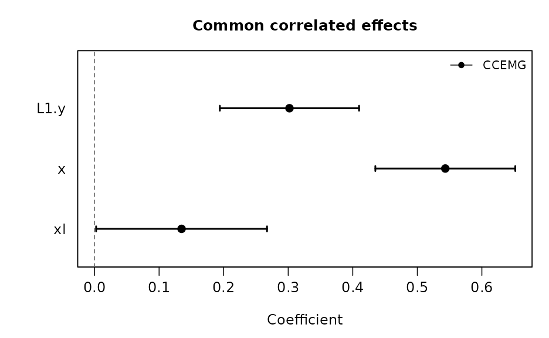
Coarsened exact matching
cemtch(): The matching of Iacus, King and Porro (2012):
each covariate is coarsened into bins, the rows are grouped by their
bins on every covariate at once, and only the groups (strata) holding
both treated and control rows are kept, so that a later regression
compares like with like without extrapolating.
set.seed(2)
n <- 300
d <- data.frame(pov = rbinom(n, 1, 0.4), age = runif(n, 14, 18))
d$lead <- rbinom(n, 1, plogis(-1 + 1.5 * d$pov))
d$y <- 0.5 * d$lead + d$pov + 0.2 * d$age + rnorm(n)
m <- cemtch(d, "lead", c("pov", "age"), cut = list(age = 4))
m
#> cemtch: coarsened exact matching, 8 of 8 strata kept
#> control treated
#> all 177 123
#> matched 177 123
#> unmatched 0 0
#> L1 imbalance: 0.416 before, 0.142 after
stats::lm(y ~ lead, d, weights = m$w, subset = m$keep)
#>
#> Call:
#> stats::lm(formula = y ~ lead, data = d, subset = m$keep, weights = m$w)
#>
#> Coefficients:
#> (Intercept) lead
#> 3.9217 0.5045Least squares with regression diagnostics and predictions
olsdx(): The multiple regression that Algahtany, Kumar
and Barclay (2022) fit to monthly counts of each kind of offence in two
regions, with the mean temperature, the mean relative humidity and the
days of haze in the month as predictors, together with the checks they
report before reading it: standardised coefficients, the tolerance and
variance inflation of each predictor and the correlations among them,
the Durbin-Watson statistic of the residuals, each row’s leverage,
studentised residuals and Cook’s distance, and the expected count, with
its standard error and interval, for a month of given weather.
# 84 months of weather and assaults, simulated
set.seed(4)
w <- data.frame(temp = rnorm(84, 26, 8), hum = runif(84, 10, 60),
haze = rpois(84, 15))
assault <- 5 + 0.7 * w$temp + 0.15 * w$hum + 0.35 * w$haze +
rnorm(84, sd = 4)
r <- olsdx(assault, w, at = c(temp = 35, hum = 74, haze = 25))
r
#> olsdx: 84 rows, 4 coefficients, R2 0.6862, adjusted 0.6744
#> F 58.3 on 3 and 80 df, p = 4.43e-20; Durbin-Watson 1.724
#> term est se t p lo hi beta
#> (Intercept) 4.0071452 2.47472213 1.619230 1.093335e-01 -0.9177087 8.9319992 NA
#> temp 0.6539668 0.06021597 10.860355 2.087182e-17 0.5341332 0.7738004 0.6808282
#> hum 0.1836688 0.03019435 6.082888 3.838547e-08 0.1235802 0.2437575 0.3815577
#> haze 0.3983768 0.09932576 4.010811 1.351956e-04 0.2007123 0.5960414 0.2513618
#> tol vif
#> NA NA
#> 0.9982123 1.001791
#> 0.9970319 1.002977
#> 0.9987934 1.001208
#> rows with Cook's distance above 1: 0; leverage from 0.2 to 0.5: 0, above: 0
#> pairs of predictors correlated above 0.7: 0; predictors with VIF above 10: 0
#> means at `at`:
#> fit se lo hi
#> 50.4469 1.693266 47.07719 53.8166
r$pred
#> fit se lo hi
#> 1 50.4469 1.693266 47.07719 53.8166
# one new month rather than the mean of such months
olsdx(assault, w, at = c(temp = 35, hum = 74, haze = 25),
pred = "new")$pred
#> fit se lo hi
#> 1 50.4469 4.289069 41.91138 58.98242
# a stricter count of influential rows
print(r, cook = 4 / 84)
#> olsdx: 84 rows, 4 coefficients, R2 0.6862, adjusted 0.6744
#> F 58.3 on 3 and 80 df, p = 4.43e-20; Durbin-Watson 1.724
#> term est se t p lo hi beta
#> (Intercept) 4.0071452 2.47472213 1.619230 1.093335e-01 -0.9177087 8.9319992 NA
#> temp 0.6539668 0.06021597 10.860355 2.087182e-17 0.5341332 0.7738004 0.6808282
#> hum 0.1836688 0.03019435 6.082888 3.838547e-08 0.1235802 0.2437575 0.3815577
#> haze 0.3983768 0.09932576 4.010811 1.351956e-04 0.2007123 0.5960414 0.2513618
#> tol vif
#> NA NA
#> 0.9982123 1.001791
#> 0.9970319 1.002977
#> 0.9987934 1.001208
#> rows with Cook's distance above 0.04761905: 6; leverage from 0.2 to 0.5: 0, above: 0
#> pairs of predictors correlated above 0.7: 0; predictors with VIF above 10: 0
#> means at `at`:
#> fit se lo hi
#> 50.4469 1.693266 47.07719 53.8166